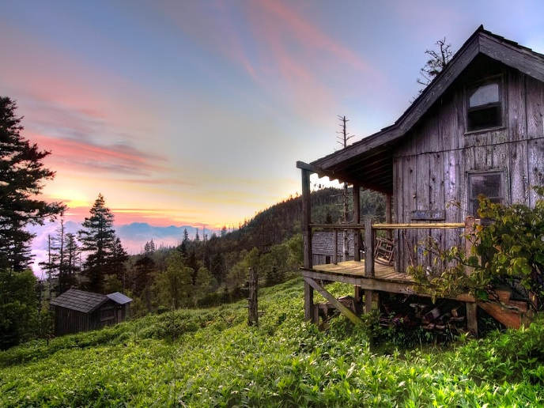
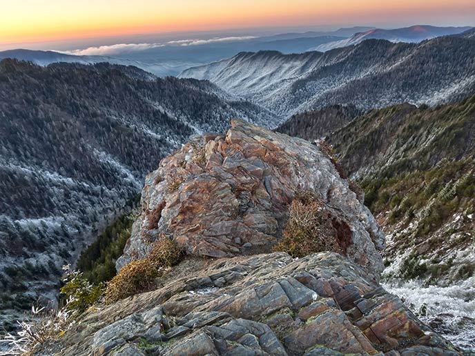
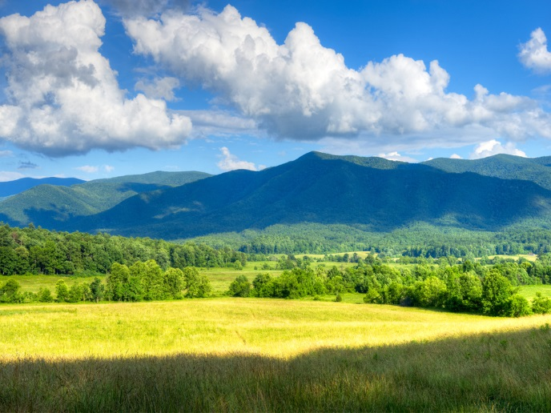
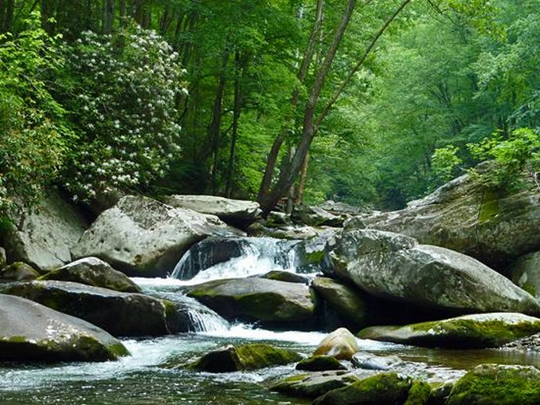
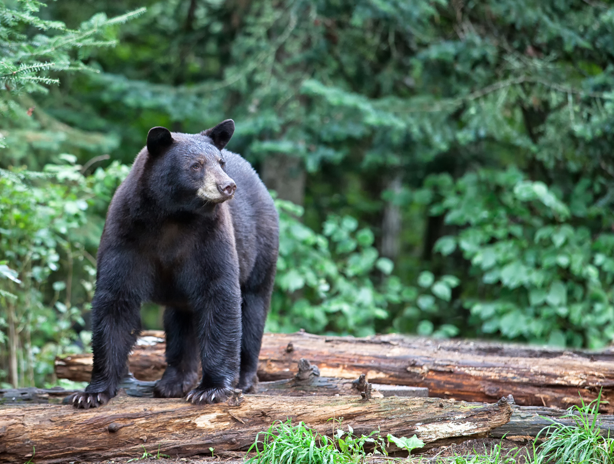
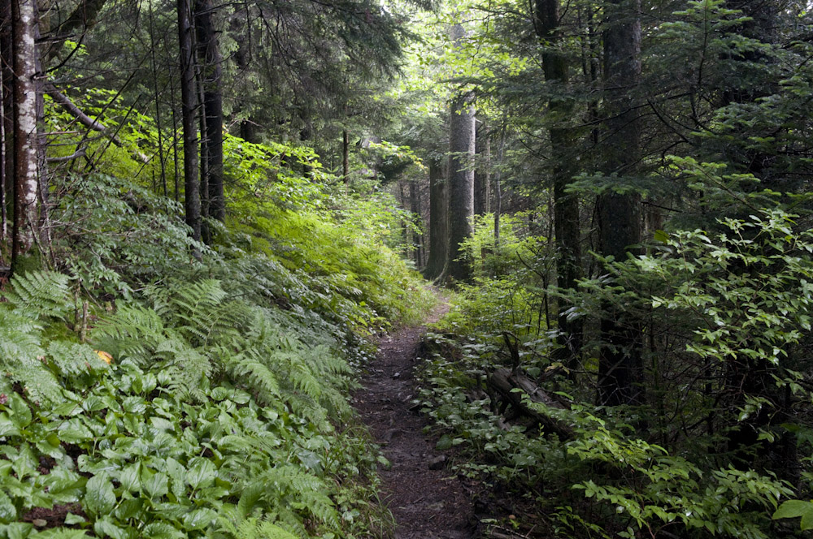

Hiking Trails of the Great Smoky Mountains
The Great Smoky Mountains National Park has over 800 miles of hiking trails that are maintained by the National Park Service. Whether you are a beginner or you have thru hiked the Appalachain Trail, The Great Smoky Mountain National Park offers a
wide variety of trails that will suit the needs of anyone. The charts below indicate how strenous the trail is based on a 0 - 20 scale with the tougher trails being indicated with a higher number.

Mt. LeConte / Gatlinburg Area
|
Trail
|
Location
|
Trail Features
|
R/T Miles
|
Elevation Gain
|
Difficulty Rating
|
| Alum Cave |
Newfound Gap Rd |
Views / Interesting Geological Features |
4.4 |
1125 |
6.65 |
| Baskin Creek Falls |
Roaring Fork Motor Trail |
Waterfalls |
3.0 |
953 |
4.91 |
| Trillium Gap |
Roaring Fork Motor Trail |
Views / Wildflowers / Falls |
6.8 |
1745 |
10.29 |
| Bullhead Trail |
Roaring Fork Motor Trail |
Views / Interesting Geological Features |
5.9 |
1607 |
9.11 |
| Chimney Tops |
Newfound Gap Rd |
Panoramic Views |
3.8 |
1487 |
6.77 |
| Grotto Falls |
Roaring Fork Motor Trail |
Waterfalls |
2.6 |
585 |
3.77 |
| Huskey Gap |
Newfound Gap Rd |
Quiet Forest Hike |
4.2 |
1240 |
6.68 |
| Mt. LeConte |
Newfound Gap Rd |
Panoramic Views / Interesting Geological Features |
11.0 |
2763 |
16.53 |
| Rainbow Falls |
Roaring Fork Motor Trail |
Waterfalls |
5.4 |
1685 |
8.77 |

Newfound Gap / Clingmans Dome Area
|
Trail
|
Location
|
Trail Features
|
R/T Miles
|
Elevation Gain
|
Difficulty Rating
|
| Andrews Bald |
Clingmans Dome Road |
Panoramic Views |
3.5 |
899 |
5.3 |
| Charlies Bunion |
Newfound Gap |
Stream |
5.0 |
1480 |
7.96 |
| Fork Ridge Trail |
Clingmans Dome Rd |
Old Spruce-Fir Forest / Wildflowers |
8.0 |
1500 |
11.0 |
| The Jump Off |
Newfound Gap |
Panoramic Views |
6.5 |
1275 |
9.05 |
| Noland Divide |
Clingmans Dome Rd |
Views / Diverse Forest |
7.20 |
1697 |
10.56 |
| Silers Bald |
Clingmans Dome Rd |
Panoramic Views |
9.3 |
2152 |
13.6 |
| Spruce-Fir Trail |
Clingmans Dome Rd |
Spruce-Fir Forest |
4.2 |
1240 |
6.68 |
| Sugarland Mtn Trail |
Clingmans Dome Rd |
Solitude / Views |
7.0 |
1090 |
9.18 |

Cades Cove / Towensend Area
|
Trail
|
Location
|
Trail Features
|
R/T Miles
|
Elevation Gain
|
Difficulty Rating
|
| Abrams Falls |
Cades Cove |
Waterfalls |
5.2 |
675 |
6.55 |
| Ace Gap |
Rich Mountain Rd |
Quiet Forest / Wildflowers |
8.6 |
1486 |
11.57 |
| Gregory Bald |
Cades Cove |
Flame Azaleas / Old Growth Forest |
11.3 |
3020 |
17.34 |
| Lumber Ridge Trail |
Towensend |
Quiet Forest Hike / Solitude |
8.1 |
1524 |
11.15 |
| Middle Prong Trail |
Towensend |
Waterfalls |
3.8 |
1487 |
6.77 |
| Rich Mountain Loop |
Cades Cove |
Views / Wildflowers |
8.5 |
17.36 |
11.97 |
| Rocky Top / Thunderhead |
Cades Cove Picnic Area |
Panoramic Views / Mtn Laurel |
13.9 |
3665 |
21.23 |
| Schoolhouse Gap |
Towensend |
Quiet Forest Hike / Wildflowers |
3.8 |
513 |
4.83 |
| Spence Field |
Cades Cove Picnic Area |
Panoramic Views / Mtn Laurel |
10.3 |
2842 |
15.98 |
| West Prong Trail |
Towensend |
Quiet Forest Hike / Stream |
5.4 |
1375 |
8.15 |

|
Trail
|
Location
|
Trail Features
|
R/T Miles
|
Elevation Gain
|
Difficulty Rating
|
| Cove Mountain |
Little River Road |
Waterfalls / Old Growth Forest |
7.7 |
1776 |
11.25 |
| Cucumber Gap Loop |
Elkmont |
Stream / Wildflowers / Historical |
5.6 |
830 |
7.26 |
| Curry Mountain Trail |
Little River Road |
Quiet Forest Hike |
6.4 |
1164 |
8.73 |
| Huskey Gap |
Little River Rd |
Stream / Wildflowers / Historical |
10 |
1080 |
12.16 |
| Laurel Falls |
Little River Road |
Waterfalls |
2.3 |
314 |
2.93 |
| Little Brier Gap |
Elkmont |
Walker Sisters Place |
2.6 |
285 |
3.17 |
| Little River Trail |
Elkmont |
Stream / Wildflowers / Historical |
4.9 |
412 |
5.72 |
| Meigs Creek Trail |
Little River Road |
Quiet Forest Hike |
7.0 |
1380 |
9.76 |
| Meigs Mountain Trail |
Elkmont |
Quiet Forest Hike |
4.6 |
661 |
5.92 |
| Sugarland Mtn Trail |
Little River Road |
Quiet Forest Hike |
6.0 |
1500 |
9.00 |
 Cherokee / Deep Creek Area
Cherokee / Deep Creek Area
|
Trail
|
Location
|
Trail Features
|
R/T Miles
|
Elevation Gain
|
Difficulty Rating
|
| Chasteen Creek Cascade |
Cherokee / Deep Creek |
Waterfall / Stream / Wildflowers |
3.6 |
340 |
4.28 |
| Deep Creek Loop |
Deep Creek |
Waterfalls / Wildflowers |
4.6 |
579 |
5.76 |
| Goldmine Loop |
Cherokee / Deep Creek |
Historical / Lake Views |
3.1 |
615 |
4.33 |
| Indian Creek Falls |
Deep Creek |
Waterfalls |
1.9 |
150 |
2.20 |
| Juney Whank Falls |
Deep Creek |
Waterfalls |
0.5 |
194 |
0.89 |
| Kanati Fork Trail |
Newfound Gap Road |
Wildflowers |
4.0 |
1495 |
6.99 |
| Kephart Prong Trail |
Newfound Gap Road |
Stream / Historical |
4.2 |
955 |
6.11 |
| Lonesome Pine Overlook |
Deep Creek |
Views |
6.7 |
2300 |
11.30 |
| Mingus Creek Trail |
Cherokee / Deep Creek |
Historical / Wildflowers / Stream |
5.8 |
1515 |
8.83 |
| Newton Bald |
Smokemount |
Quiet Forest Hike / Views- |
10.0 |
2800 |
15.60 |
| Oconaluftee River Trail |
Oconaluftee Visitor Center |
Historical / Stream |
3.0 |
70 |
3.14 |
| Smokemount Loop |
Smokemount |
Stream / Wildflowers / Forest |
6.5 |
1441 |
9.38 |
| Toms Branch Falls |
Deep Creek |
Waterfalls |
0.6 |
47 |
0.69 |

|
Trail
|
Location
|
Trail Features
|
R/T Miles
|
Elevation Gain
|
Difficulty Rating
|
| Albright Grove |
Maddron Bald Trailhead |
Old Growth Forest / Wildflowers |
7.0 |
1500 |
10.00 |
| Brushy Mountain |
Greenbrier |
Views |
11.7 |
3000 |
17.70 |
| Grapeyard Ridge Trail |
Greenbrier |
Injun Creek steam engine wreck |
5.8 |
980 |
7.76 |
| Hen Wallow Falls |
Cosby |
Waterfalls |
4.4 |
900 |
6.20 |
| Mt. Cammerer |
Cosby |
Waterfalls |
4.4 |
900 |
6.20 |
| Old Settlers Trail |
Maddron Bald Trailhead |
Historical / Tyson McCarter Barn |
8.8 |
1650 |
12.10 |
| Porters Creek Trail |
Greenbrier |
Waterfalls / Old Growth Forest |
4.0 |
699 |
5.40 |
| Ramsey Cascades |
Greenbrier |
Waterfalls / Old Growth Forest |
8.0 |
2190 |
12.38 |

|
Trail
|
Location
|
Trail Features
|
R/T Miles
|
Elevation Gain
|
Difficulty Rating
|
| Balsam High Top |
Balsam Mountain |
Solitude / Quiet Forest Hike |
7.6 |
2535 |
12.67 |
| Flat Creek Falls |
Balsam Mountain |
Waterfalls |
4.0 |
600 |
5.20 |
| Hemphill Bald Loop |
Balsam Mountain |
Old Growth Forest |
13.7 |
2170 |
18.04 |
| Rough Fork Trail |
Balsam Mountain |
Quiet Forest Hike |
5.2 |
600 |
6.4 |
| Mouse Creek Falls |
Big Creek |
Waterfalls |
4.2 |
605 |
5.41 |
| Mt. Sterling |
Big Creek |
Panoramic Views |
12.2 |
4200 |
20.60 |
| Big Fork Ridge Loop |
Cataloochee |
Old Growth Forest |
9.3 |
1800 |
12.90 |
| Boogerman Loop |
Cataloochee |
Streams / Old Growth Forest |
7.4 |
1040 |
9.48 |
| Cataloochee Divide |
Cove Creek Cap |
Wildflowers / Views |
7.0 |
2120 |
11.24 |
| Twentymile Loop |
Fontana Village |
Stream |
7.5 |
900 |
9.30 |